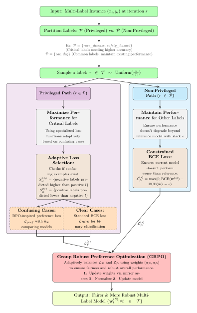
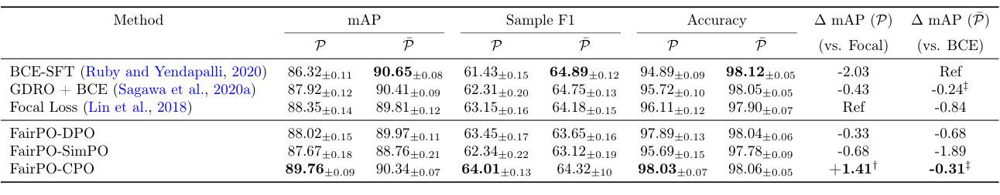
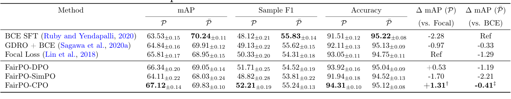
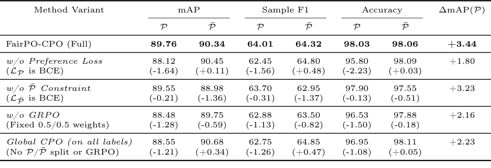
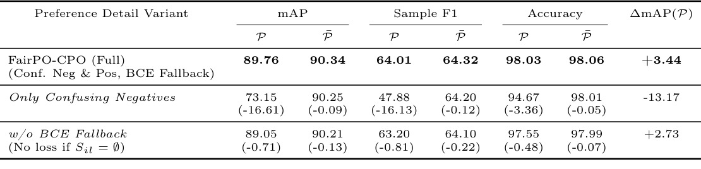

FairPO: Fair Preference Optimization for Multi-Label Learning
In multi-label classification an image can carry several correct labels. On imbalanced data a model learns the frequent ones well and keeps missing the rare ones. Reweighting the loss helps a little, but the trouble with a rare label is often relational: a plausible wrong label scores higher than it does. We show that preference optimization, the family of methods used to align language models, can target exactly these confusions.
FairPO splits the labels into a privileged group to improve and the rest, which must not fall far below a reference model. For privileged labels, every wrong label the model scores too highly becomes a preference pair. A group-robust weighting balances the two goals during training. On MS-COCO, its CPO variant improves mAP on the rarest 20% of labels by 3.44 points over the BCE baseline, with no significant change on the others.

Two groups, two goals
Each input \(x_i\) has a label vector \(y_i \in \{0,1\}^{|\mathcal{T}|}\), and the model produces a score \(m(x_i; w_t)\) for every label \(t\). A reference model \(\hat w\), the ordinary BCE-trained classifier, is kept fixed. We split the labels into a privileged group \(P\), whose performance we want to raise, and the rest \(\bar P\), which should not get much worse. In our experiments \(P\) is the least frequent 20% of labels, but the split can follow any criterion, such as which labels matter most in an application.
The two goals are balanced with group-robust optimization,
\[ \min_{\{w_t\}}\; \max_{\alpha_P + \alpha_{\bar P} = 1} \Big[\, \alpha_P\, \mathcal{L}_P + \alpha_{\bar P}\, \mathcal{L}_{\bar P} \,\Big]. \]The weights \(\alpha\) move towards whichever group currently has the larger loss, so training keeps attending to the group that is worse off.
Ingredient 1: turn confusion into preferences
Per-label losses such as BCE or focal loss ask whether each score is right on its own. A rare true label at 0.48 next to a wrong label at 0.63 gets only a weak signal from them. So for each privileged label \(l\) we collect the labels the model currently confuses it with:
\[ S^{\text{neg}}_{il} = \{k : y_{ik} = 0,\; m(x_i; w_k) \ge m(x_i; w_l)\}, \qquad S^{\text{pos}}_{il} = \{k : y_{ik} = 1,\; m(x_i; w_k) \le m(x_i; w_l)\}. \]If \(l\) is a true label, its confusing negatives are wrong labels scored at least as high. If \(l\) is a wrong label, its confusing positives are true labels scored no higher. Either way the pair is ranked the wrong way round, and the label that should win (\(p\)) and the one that should lose (\(d\)) form a preference pair. The DPO-style loss asks the model to raise \(p\)'s score, relative to the reference model, more than \(d\)'s:
\[ \mathcal{L}^{\text{DPO}}_{\text{pref}} = -\log \sigma\!\left( \beta \left[ \log \frac{m(x_i; w_p)}{m(x_i; \hat w_p)} - \log \frac{m(x_i; w_d)}{m(x_i; \hat w_d)} \right] \right). \]A fallback for the easy cases. As training goes on, confusing pairs become rare, and a preference loss on its own would leave the gradient sparse. When a label has no confusing counterpart, we fall back to ordinary BCE:
\[ \mathcal{L}_P = \mathbb{E}\Big[\, \mathbf{1}_{S_{il} \neq \emptyset}\, \mathcal{L}_{\text{pref}}(x_i, p, d) + \mathbf{1}_{S_{il} = \emptyset}\, \ell_{\text{BCE}}(x_i, y_{il}; w_l) \,\Big]. \]The CPO variant. The best version drops the reference model and adds a BCE anchor, so the model learns both the ranking and the absolute score:
\[ \mathcal{L}^{\text{CPO}}_{\text{pref}} = -\log \sigma\!\left( \beta \log \frac{m(x_i; w_p)}{m(x_i; w_d)} \right) + \lambda_{\text{CPO}}\, \ell_{\text{BCE}}(x_i, y_{il}; w_l). \]A SimPO-style variant instead adds a target margin inside the sigmoid.
Ingredient 2: a guardrail for everyone else
The non-privileged labels are not pushed to improve. They are penalised only if their BCE gets worse than the reference model's by more than a slack \(\epsilon\):
\[ \mathcal{L}_{\bar P} = \max\big(0,\; \ell_{\text{BCE}}(w) - \ell_{\text{BCE}}(\hat w) - \epsilon \big). \]Training alternates mirror ascent on \(\alpha\) with mirror descent on the model weights. The two group losses have different scales, so \(\alpha\) is updated from each loss's change relative to its running average rather than from the raw values. This keeps the balance from oscillating.
Results
The base model is a frozen ViT with a small MLP head per label, evaluated on MS-COCO 2014 and NUS-WIDE. Results are averaged over three runs.
Rare labels improve. On MS-COCO, FairPO-CPO reaches 89.76 mAP on the privileged labels, 3.44 points above BCE and 1.41 above focal loss, the strongest baseline. The gain over focal loss is significant (p < 0.05). On the other labels it scores 90.34 against BCE's 90.65, a difference that is not significant. The DPO and SimPO variants do not beat focal loss on the privileged labels.

It carries over. On NUS-WIDE, FairPO-CPO again leads on the privileged labels, 67.12 against 65.81 for focal loss, and its small drop on the rest is not significant.

What matters. Removing any part hurts:
- Preference loss. With plain BCE on the privileged labels, the gain over BCE falls from 3.44 to 1.80 points.
- Guardrail. Without the constraint, the non-privileged labels lose 1.36 mAP.
- Adaptive weighting. Fixed 0.5/0.5 weights instead of GRPO make both groups worse.
- The group split. CPO applied to every label, with no split, is better than BCE but clearly worse than FairPO.
- Both kinds of confusion. Using only confusing negatives collapses privileged mAP to 73.15. Dropping the BCE fallback costs 0.71 points.


Limitations
- Choosing the groups. Which labels are privileged has to be decided for each task. Our experiments use frequency.
- A moving target. The set of confusing pairs changes during training, which can make optimisation less stable.
- Tuning. The DPO variant needs a reference model, and the GRPO balance needs tuning.
- A narrow notion of fairness. FairPO reallocates learning effort between label groups. It is not a guarantee under other definitions of fairness.
Takeaway
Rare labels are often lost because something plausible outranks them, not because their score is wrong in isolation. Turning those confusions into preference pairs targets the actual failure, and a group-robust balance with a guardrail makes sure the gain on rare labels is not paid for by the common ones.
Citation
@inproceedings{mondal2025fairpo,
title = {{FairPO}: Fair Preference Optimization for Multi-Label Learning},
author = {Mondal, Soumen Kumar and Chanda, Prateek and Varmora, Akshit and Ramakrishnan, Ganesh},
booktitle = {NeurIPS 2025 Workshop on Optimization for Machine Learning},
year = {2025}
}